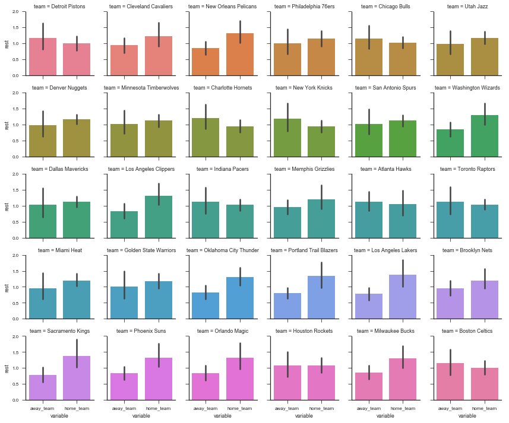
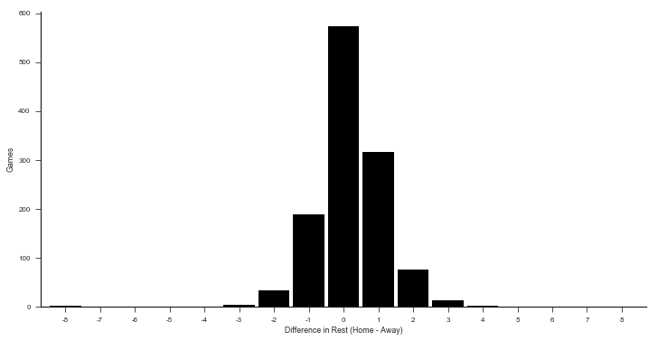
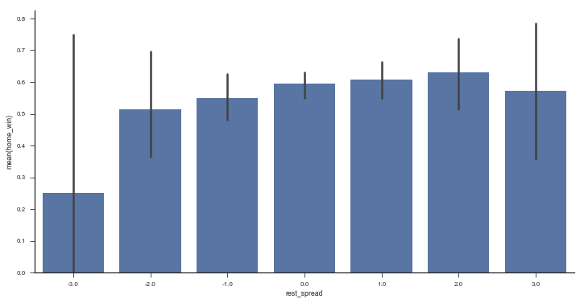
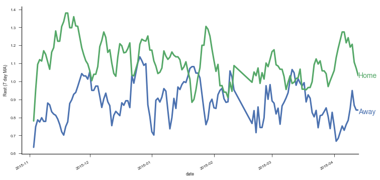
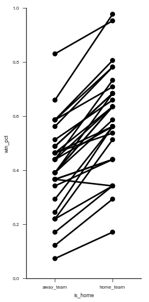
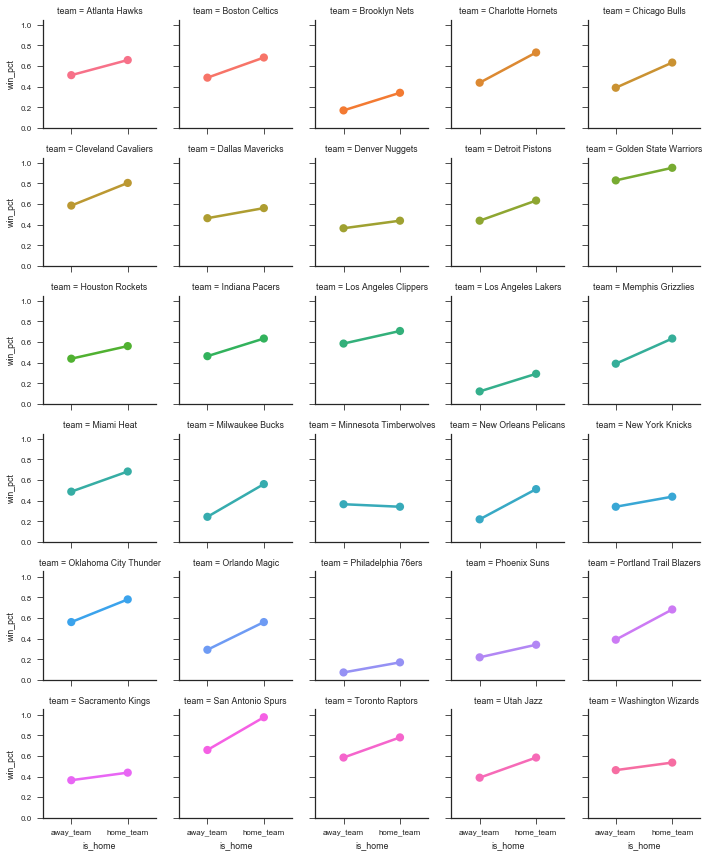
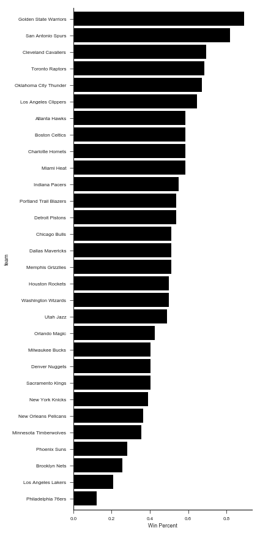
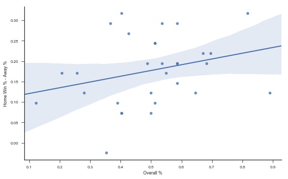

This is part 5 in my series on writing modern idiomatic pandas.
Reshaping & Tidy Data
Structuring datasets to facilitate analysis (Wickham 2014)
So, you've sat down to analyze a new dataset. What do you do first?
In episode 11 of Not So Standard Deviations, Hilary and Roger discussed their typical approaches. I'm with Hilary on this one, you should make sure your data is tidy. Before you do any plots, filtering, transformations, summary statistics, regressions... Without a tidy dataset, you'll be fighting your tools to get the result you need. With a tidy dataset, it's relatively easy to do all of those.
Hadley Wickham kindly summarized tidiness as a dataset where
- Each variable forms a column
- Each observation forms a row
- Each type of observational unit forms a table
And today we'll only concern ourselves with the first two. As quoted at the top, this really is about facilitating analysis: going as quickly as possible from question to answer.
%matplotlib inline
import os
import numpy as np
import pandas as pd
import seaborn as sns
import matplotlib.pyplot as plt
if int(os.environ.get("MODERN_PANDAS_EPUB", 0)):
import prep # noqa
pd.options.display.max_rows = 10
sns.set(style='ticks', context='talk')
NBA Data
This StackOverflow question asked about calculating the number of days of rest NBA teams have between games. The answer would have been difficult to compute with the raw data. After transforming the dataset to be tidy, we're able to quickly get the answer.
We'll grab some NBA game data from basketball-reference.com using pandas' read_html function, which returns a list of DataFrames.
fp = 'data/nba.csv'
if not os.path.exists(fp):
tables = pd.read_html("http://www.basketball-reference.com/leagues/NBA_2016_games.html")
games = tables[0]
games.to_csv(fp)
else:
games = pd.read_csv(fp)
games.head()
| Date | Start (ET) | Unnamed: 2 | Visitor/Neutral | PTS | Home/Neutral | PTS.1 | Unnamed: 7 | Notes | |
|---|---|---|---|---|---|---|---|---|---|
| 0 | October | NaN | NaN | NaN | NaN | NaN | NaN | NaN | NaN |
| 1 | Tue, Oct 27, 2015 | 8:00 pm | Box Score | Detroit Pistons | 106.0 | Atlanta Hawks | 94.0 | NaN | NaN |
| 2 | Tue, Oct 27, 2015 | 8:00 pm | Box Score | Cleveland Cavaliers | 95.0 | Chicago Bulls | 97.0 | NaN | NaN |
| 3 | Tue, Oct 27, 2015 | 10:30 pm | Box Score | New Orleans Pelicans | 95.0 | Golden State Warriors | 111.0 | NaN | NaN |
| 4 | Wed, Oct 28, 2015 | 7:30 pm | Box Score | Philadelphia 76ers | 95.0 | Boston Celtics | 112.0 | NaN | NaN |
Side note: pandas' read_html is pretty good. On simple websites it almost always works.
It provides a couple parameters for controlling what gets selected from the webpage if the defaults fail.
I'll always use it first, before moving on to BeautifulSoup or lxml if the page is more complicated.
As you can see, we have a bit of general munging to do before tidying. Each month slips in an extra row of mostly NaNs, the column names aren't too useful, and we have some dtypes to fix up.
column_names = {'Date': 'date', 'Start (ET)': 'start',
'Unamed: 2': 'box', 'Visitor/Neutral': 'away_team',
'PTS': 'away_points', 'Home/Neutral': 'home_team',
'PTS.1': 'home_points', 'Unamed: 7': 'n_ot'}
games = (games.rename(columns=column_names)
.dropna(thresh=4)
[['date', 'away_team', 'away_points', 'home_team', 'home_points']]
.assign(date=lambda x: pd.to_datetime(x['date'], format='%a, %b %d, %Y'))
.set_index('date', append=True)
.rename_axis(["game_id", "date"])
.sort_index())
games.head()
| away_team | away_points | home_team | home_points | ||
|---|---|---|---|---|---|
| game_id | date | ||||
| 1 | 2015-10-27 | Detroit Pistons | 106.0 | Atlanta Hawks | 94.0 |
| 2 | 2015-10-27 | Cleveland Cavaliers | 95.0 | Chicago Bulls | 97.0 |
| 3 | 2015-10-27 | New Orleans Pelicans | 95.0 | Golden State Warriors | 111.0 |
| 4 | 2015-10-28 | Philadelphia 76ers | 95.0 | Boston Celtics | 112.0 |
| 5 | 2015-10-28 | Chicago Bulls | 115.0 | Brooklyn Nets | 100.0 |
A quick aside on that last block.
dropnahas athreshargument. If at leastthreshitems are missing, the row is dropped. We used it to remove the "Month headers" that slipped into the table.assigncan take a callable. This lets us refer to the DataFrame in the previous step of the chain. Otherwise we would have to assigntemp_df = games.dropna()...And then do thepd.to_datetimeon that.set_indexhas anappendkeyword. We keep the original index around since it will be our unique identifier per game.- We use
.rename_axisto set the index names (this behavior is new in pandas 0.18; before.rename_axisonly took a mapping for changing labels).
The Question:
How many days of rest did each team get between each game?
Whether or not your dataset is tidy depends on your question. Given our question, what is an observation?
In this case, an observation is a (team, game) pair, which we don't have yet. Rather, we have two observations per row, one for home and one for away. We'll fix that with pd.melt.
pd.melt works by taking observations that are spread across columns (away_team, home_team), and melting them down into one column with multiple rows. However, we don't want to lose the metadata (like game_id and date) that is shared between the observations. By including those columns as id_vars, the values will be repeated as many times as needed to stay with their observations.
tidy = pd.melt(games.reset_index(),
id_vars=['game_id', 'date'], value_vars=['away_team', 'home_team'],
value_name='team')
tidy.head()
| game_id | date | variable | team | |
|---|---|---|---|---|
| 0 | 1 | 2015-10-27 | away_team | Detroit Pistons |
| 1 | 2 | 2015-10-27 | away_team | Cleveland Cavaliers |
| 2 | 3 | 2015-10-27 | away_team | New Orleans Pelicans |
| 3 | 4 | 2015-10-28 | away_team | Philadelphia 76ers |
| 4 | 5 | 2015-10-28 | away_team | Chicago Bulls |
The DataFrame tidy meets our rules for tidiness: each variable is in a column, and each observation (team, date pair) is on its own row.
Now the translation from question ("How many days of rest between games") to operation ("date of today's game - date of previous game - 1") is direct:
# For each team... get number of days between games
tidy.groupby('team')['date'].diff().dt.days - 1
0 NaN
1 NaN
2 NaN
3 NaN
4 NaN
...
2455 7.0
2456 1.0
2457 1.0
2458 3.0
2459 2.0
Name: date, Length: 2460, dtype: float64
That's the essence of tidy data, the reason why it's worth considering what shape your data should be in. It's about setting yourself up for success so that the answers naturally flow from the data (just kidding, it's usually still difficult. But hopefully less so).
Let's assign that back into our DataFrame
tidy['rest'] = tidy.sort_values('date').groupby('team').date.diff().dt.days - 1
tidy.dropna().head()
| game_id | date | variable | team | rest | |
|---|---|---|---|---|---|
| 4 | 5 | 2015-10-28 | away_team | Chicago Bulls | 0.0 |
| 8 | 9 | 2015-10-28 | away_team | Cleveland Cavaliers | 0.0 |
| 14 | 15 | 2015-10-28 | away_team | New Orleans Pelicans | 0.0 |
| 17 | 18 | 2015-10-29 | away_team | Memphis Grizzlies | 0.0 |
| 18 | 19 | 2015-10-29 | away_team | Dallas Mavericks | 0.0 |
To show the inverse of melt, let's take rest values we just calculated and place them back in the original DataFrame with a pivot_table.
by_game = (pd.pivot_table(tidy, values='rest',
index=['game_id', 'date'],
columns='variable')
.rename(columns={'away_team': 'away_rest',
'home_team': 'home_rest'}))
df = pd.concat([games, by_game], axis=1)
df.dropna().head()
| away_team | away_points | home_team | home_points | away_rest | home_rest | ||
|---|---|---|---|---|---|---|---|
| game_id | date | ||||||
| 18 | 2015-10-29 | Memphis Grizzlies | 112.0 | Indiana Pacers | 103.0 | 0.0 | 0.0 |
| 19 | 2015-10-29 | Dallas Mavericks | 88.0 | Los Angeles Clippers | 104.0 | 0.0 | 0.0 |
| 20 | 2015-10-29 | Atlanta Hawks | 112.0 | New York Knicks | 101.0 | 1.0 | 0.0 |
| 21 | 2015-10-30 | Charlotte Hornets | 94.0 | Atlanta Hawks | 97.0 | 1.0 | 0.0 |
| 22 | 2015-10-30 | Toronto Raptors | 113.0 | Boston Celtics | 103.0 | 1.0 | 1.0 |
One somewhat subtle point: an "observation" depends on the question being asked.
So really, we have two tidy datasets, tidy for answering team-level questions, and df for answering game-level questions.
One potentially interesting question is "what was each team's average days of rest, at home and on the road?" With a tidy dataset (the DataFrame tidy, since it's team-level), seaborn makes this easy (more on seaborn in a future post):
sns.set(style='ticks', context='paper')
g = sns.FacetGrid(tidy, col='team', col_wrap=6, hue='team', size=2)
g.map(sns.barplot, 'variable', 'rest');

An example of a game-level statistic is the distribution of rest differences in games:
df['home_win'] = df['home_points'] > df['away_points']
df['rest_spread'] = df['home_rest'] - df['away_rest']
df.dropna().head()
| away_team | away_points | home_team | home_points | away_rest | home_rest | home_win | rest_spread | ||
|---|---|---|---|---|---|---|---|---|---|
| game_id | date | ||||||||
| 18 | 2015-10-29 | Memphis Grizzlies | 112.0 | Indiana Pacers | 103.0 | 0.0 | 0.0 | False | 0.0 |
| 19 | 2015-10-29 | Dallas Mavericks | 88.0 | Los Angeles Clippers | 104.0 | 0.0 | 0.0 | True | 0.0 |
| 20 | 2015-10-29 | Atlanta Hawks | 112.0 | New York Knicks | 101.0 | 1.0 | 0.0 | False | -1.0 |
| 21 | 2015-10-30 | Charlotte Hornets | 94.0 | Atlanta Hawks | 97.0 | 1.0 | 0.0 | True | -1.0 |
| 22 | 2015-10-30 | Toronto Raptors | 113.0 | Boston Celtics | 103.0 | 1.0 | 1.0 | False | 0.0 |
delta = (by_game.home_rest - by_game.away_rest).dropna().astype(int)
ax = (delta.value_counts()
.reindex(np.arange(delta.min(), delta.max() + 1), fill_value=0)
.sort_index()
.plot(kind='bar', color='k', width=.9, rot=0, figsize=(12, 6))
)
sns.despine()
ax.set(xlabel='Difference in Rest (Home - Away)', ylabel='Games');

Or the win percent by rest difference
fig, ax = plt.subplots(figsize=(12, 6))
sns.barplot(x='rest_spread', y='home_win', data=df.query('-3 <= rest_spread <= 3'),
color='#4c72b0', ax=ax)
sns.despine()

Stack / Unstack
Pandas has two useful methods for quickly converting from wide to long format (stack) and long to wide (unstack).
rest = (tidy.groupby(['date', 'variable'])
.rest.mean()
.dropna())
rest.head()
date variable
2015-10-28 away_team 0.000000
home_team 0.000000
2015-10-29 away_team 0.333333
home_team 0.000000
2015-10-30 away_team 1.083333
Name: rest, dtype: float64
rest is in a "long" form since we have a single column of data, with multiple "columns" of metadata (in the MultiIndex). We use .unstack to move from long to wide.
rest.unstack().head()
| variable | away_team | home_team |
|---|---|---|
| date | ||
| 2015-10-28 | 0.000000 | 0.000000 |
| 2015-10-29 | 0.333333 | 0.000000 |
| 2015-10-30 | 1.083333 | 0.916667 |
| 2015-10-31 | 0.166667 | 0.833333 |
| 2015-11-01 | 1.142857 | 1.000000 |
unstack moves a level of a MultiIndex (innermost by default) up to the columns.
stack is the inverse.
rest.unstack().stack()
date variable
2015-10-28 away_team 0.000000
home_team 0.000000
2015-10-29 away_team 0.333333
home_team 0.000000
2015-10-30 away_team 1.083333
...
2016-04-11 home_team 0.666667
2016-04-12 away_team 1.000000
home_team 1.400000
2016-04-13 away_team 0.500000
home_team 1.214286
Length: 320, dtype: float64
With .unstack you can move between those APIs that expect there data in long-format and those APIs that work with wide-format data. For example, DataFrame.plot(), works with wide-form data, one line per column.
with sns.color_palette() as pal:
b, g = pal.as_hex()[:2]
ax=(rest.unstack()
.query('away_team < 7')
.rolling(7)
.mean()
.plot(figsize=(12, 6), linewidth=3, legend=False))
ax.set(ylabel='Rest (7 day MA)')
ax.annotate("Home", (rest.index[-1][0], 1.02), color=g, size=14)
ax.annotate("Away", (rest.index[-1][0], 0.82), color=b, size=14)
sns.despine()

The most conenient form will depend on exactly what you're doing.
When interacting with databases you'll often deal with long form data.
Pandas' DataFrame.plot often expects wide-form data, while seaborn often expect long-form data. Regressions will expect wide-form data. Either way, it's good to be comfortable with stack and unstack (and MultiIndexes) to quickly move between the two.
Mini Project: Home Court Advantage?
We've gone to all that work tidying our dataset, let's put it to use. What's the effect (in terms of probability to win) of being the home team?
Step 1: Create an outcome variable
We need to create an indicator for whether the home team won.
Add it as a column called home_win in games.
df['home_win'] = df.home_points > df.away_points
Step 2: Find the win percent for each team
In the 10-minute literature review I did on the topic, it seems like people include a team-strength variable in their regressions. I suppose that makes sense; if stronger teams happened to play against weaker teams at home more often than away, it'd look like the home-effect is stronger than it actually is. We'll do a terrible job of controlling for team strength by calculating each team's win percent and using that as a predictor. It'd be better to use some kind of independent measure of team strength, but this will do for now.
We'll use a similar melt operation as earlier, only now with the home_win variable we just created.
wins = (
pd.melt(df.reset_index(),
id_vars=['game_id', 'date', 'home_win'],
value_name='team', var_name='is_home',
value_vars=['home_team', 'away_team'])
.assign(win=lambda x: x.home_win == (x.is_home == 'home_team'))
.groupby(['team', 'is_home'])
.win
.agg(['sum', 'count', 'mean'])
.rename(columns=dict(sum='n_wins',
count='n_games',
mean='win_pct'))
)
wins.head()
| n_wins | n_games | win_pct | ||
|---|---|---|---|---|
| team | is_home | |||
| Atlanta Hawks | away_team | 21.0 | 41 | 0.512195 |
| home_team | 27.0 | 41 | 0.658537 | |
| Boston Celtics | away_team | 20.0 | 41 | 0.487805 |
| home_team | 28.0 | 41 | 0.682927 | |
| Brooklyn Nets | away_team | 7.0 | 41 | 0.170732 |
Pause for visualiztion, because why not
g = sns.FacetGrid(wins.reset_index(), hue='team', size=7, aspect=.5, palette=['k'])
g.map(sns.pointplot, 'is_home', 'win_pct').set(ylim=(0, 1));

(It'd be great if there was a library built on top of matplotlib that auto-labeled each point decently well. Apparently this is a difficult problem to do in general).
g = sns.FacetGrid(wins.reset_index(), col='team', hue='team', col_wrap=5, size=2)
g.map(sns.pointplot, 'is_home', 'win_pct')
<seaborn.axisgrid.FacetGrid at 0x11a0fe588>

Those two graphs show that most teams have a higher win-percent at home than away. So we can continue to investigate. Let's aggregate over home / away to get an overall win percent per team.
win_percent = (
# Use sum(games) / sum(games) instead of mean
# since I don't know if teams play the same
# number of games at home as away
wins.groupby(level='team', as_index=True)
.apply(lambda x: x.n_wins.sum() / x.n_games.sum())
)
win_percent.head()
team
Atlanta Hawks 0.585366
Boston Celtics 0.585366
Brooklyn Nets 0.256098
Charlotte Hornets 0.585366
Chicago Bulls 0.512195
dtype: float64
win_percent.sort_values().plot.barh(figsize=(6, 12), width=.85, color='k')
plt.tight_layout()
sns.despine()
plt.xlabel("Win Percent")

Is there a relationship between overall team strength and their home-court advantage?
plt.figure(figsize=(8, 5))
(wins.win_pct
.unstack()
.assign(**{'Home Win % - Away %': lambda x: x.home_team - x.away_team,
'Overall %': lambda x: (x.home_team + x.away_team) / 2})
.pipe((sns.regplot, 'data'), x='Overall %', y='Home Win % - Away %')
)
sns.despine()
plt.tight_layout()

Let's get the team strength back into df.
You could you pd.merge, but I prefer .map when joining a Series.
df = df.assign(away_strength=df['away_team'].map(win_percent),
home_strength=df['home_team'].map(win_percent),
point_diff=df['home_points'] - df['away_points'],
rest_diff=df['home_rest'] - df['away_rest'])
df.head()
| away_team | away_points | home_team | home_points | away_rest | home_rest | home_win | rest_spread | away_strength | home_strength | point_diff | rest_diff | ||
|---|---|---|---|---|---|---|---|---|---|---|---|---|---|
| game_id | date | ||||||||||||
| 1 | 2015-10-27 | Detroit Pistons | 106.0 | Atlanta Hawks | 94.0 | NaN | NaN | False | NaN | 0.536585 | 0.585366 | -12.0 | NaN |
| 2 | 2015-10-27 | Cleveland Cavaliers | 95.0 | Chicago Bulls | 97.0 | NaN | NaN | True | NaN | 0.695122 | 0.512195 | 2.0 | NaN |
| 3 | 2015-10-27 | New Orleans Pelicans | 95.0 | Golden State Warriors | 111.0 | NaN | NaN | True | NaN | 0.365854 | 0.890244 | 16.0 | NaN |
| 4 | 2015-10-28 | Philadelphia 76ers | 95.0 | Boston Celtics | 112.0 | NaN | NaN | True | NaN | 0.121951 | 0.585366 | 17.0 | NaN |
| 5 | 2015-10-28 | Chicago Bulls | 115.0 | Brooklyn Nets | 100.0 | 0.0 | NaN | False | NaN | 0.512195 | 0.256098 | -15.0 | NaN |
import statsmodels.formula.api as sm
df['home_win'] = df.home_win.astype(int) # for statsmodels
mod = sm.logit('home_win ~ home_strength + away_strength + home_rest + away_rest', df)
res = mod.fit()
res.summary()
Optimization terminated successfully.
Current function value: 0.552792
Iterations 6
| Dep. Variable: | home_win | No. Observations: | 1213 |
|---|---|---|---|
| Model: | Logit | Df Residuals: | 1208 |
| Method: | MLE | Df Model: | 4 |
| Date: | Sun, 03 Sep 2017 | Pseudo R-squ.: | 0.1832 |
| Time: | 07:25:41 | Log-Likelihood: | -670.54 |
| converged: | True | LL-Null: | -820.91 |
| LLR p-value: | 7.479e-64 |
| coef | std err | z | P>|z| | [0.025 | 0.975] | |
|---|---|---|---|---|---|---|
| Intercept | 0.0707 | 0.314 | 0.225 | 0.822 | -0.546 | 0.687 |
| home_strength | 5.4204 | 0.465 | 11.647 | 0.000 | 4.508 | 6.333 |
| away_strength | -4.7445 | 0.452 | -10.506 | 0.000 | -5.630 | -3.859 |
| home_rest | 0.0894 | 0.079 | 1.137 | 0.255 | -0.065 | 0.243 |
| away_rest | -0.0422 | 0.067 | -0.629 | 0.529 | -0.174 | 0.089 |
The strength variables both have large coefficeints (really we should be using some independent measure of team strength here, win_percent is showing up on the left and right side of the equation). The rest variables don't seem to matter as much.
With .assign we can quickly explore variations in formula.
(sm.Logit.from_formula('home_win ~ strength_diff + rest_spread',
df.assign(strength_diff=df.home_strength - df.away_strength))
.fit().summary())
Optimization terminated successfully.
Current function value: 0.553499
Iterations 6
| Dep. Variable: | home_win | No. Observations: | 1213 |
|---|---|---|---|
| Model: | Logit | Df Residuals: | 1210 |
| Method: | MLE | Df Model: | 2 |
| Date: | Sun, 03 Sep 2017 | Pseudo R-squ.: | 0.1821 |
| Time: | 07:25:41 | Log-Likelihood: | -671.39 |
| converged: | True | LL-Null: | -820.91 |
| LLR p-value: | 1.165e-65 |
| coef | std err | z | P>|z| | [0.025 | 0.975] | |
|---|---|---|---|---|---|---|
| Intercept | 0.4610 | 0.068 | 6.756 | 0.000 | 0.327 | 0.595 |
| strength_diff | 5.0671 | 0.349 | 14.521 | 0.000 | 4.383 | 5.751 |
| rest_spread | 0.0566 | 0.062 | 0.912 | 0.362 | -0.065 | 0.178 |
mod = sm.Logit.from_formula('home_win ~ home_rest + away_rest', df)
res = mod.fit()
res.summary()
Optimization terminated successfully.
Current function value: 0.676549
Iterations 4
| Dep. Variable: | home_win | No. Observations: | 1213 |
|---|---|---|---|
| Model: | Logit | Df Residuals: | 1210 |
| Method: | MLE | Df Model: | 2 |
| Date: | Sun, 03 Sep 2017 | Pseudo R-squ.: | 0.0003107 |
| Time: | 07:25:41 | Log-Likelihood: | -820.65 |
| converged: | True | LL-Null: | -820.91 |
| LLR p-value: | 0.7749 |
| coef | std err | z | P>|z| | [0.025 | 0.975] | |
|---|---|---|---|---|---|---|
| Intercept | 0.3667 | 0.094 | 3.889 | 0.000 | 0.182 | 0.552 |
| home_rest | 0.0338 | 0.069 | 0.486 | 0.627 | -0.102 | 0.170 |
| away_rest | -0.0420 | 0.061 | -0.693 | 0.488 | -0.161 | 0.077 |
Overall not seeing to much support for rest mattering, but we got to see some more tidy data.
That's it for today. Next time we'll look at data visualization.